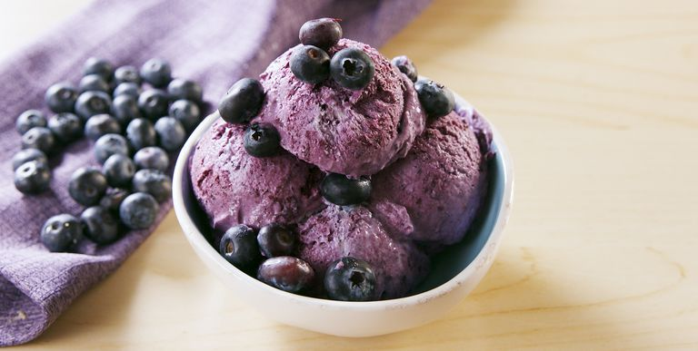

Blueberry No-Churn Ice Cream
INGREDIENTS :
- 4 c. blueberries, plus more for serving
- 1/4 c. granulated sugar
- 1 Juice and zest of 1 lmeon
- 3 c. heavy cream
- 1 (14-oz.) can sweetened condensed milk
METHOD :
- In a food processor, puree blueberries then transfer to a medium saucepan. Working over medium heat, add sugar, lemon juice, and lemon zest. Bring mixture to a boil then reduce heat. Simmer until slightly reduced, about 15 minutes.
- Transfer to a bowl and place in refrigerator to chill.
- In a large bowl using a hand mixer, or in the bowl of a stand mixer fitted with the whisk attachment, beat heavy cream until stiff peaks form. Fold in sweetened condensed milk until fully combined then fold in chilled blueberry puree.
- Transfer to 9”-x-5” loaf pan and freeze until firm, 5 hours.
- Serve with fresh blueberries.